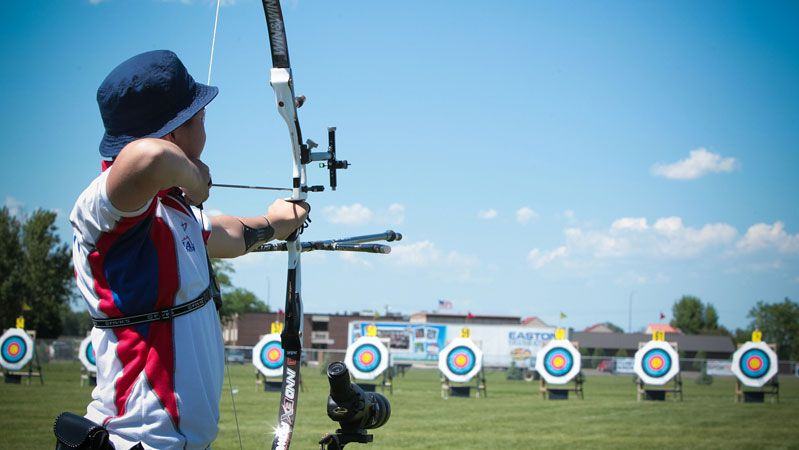
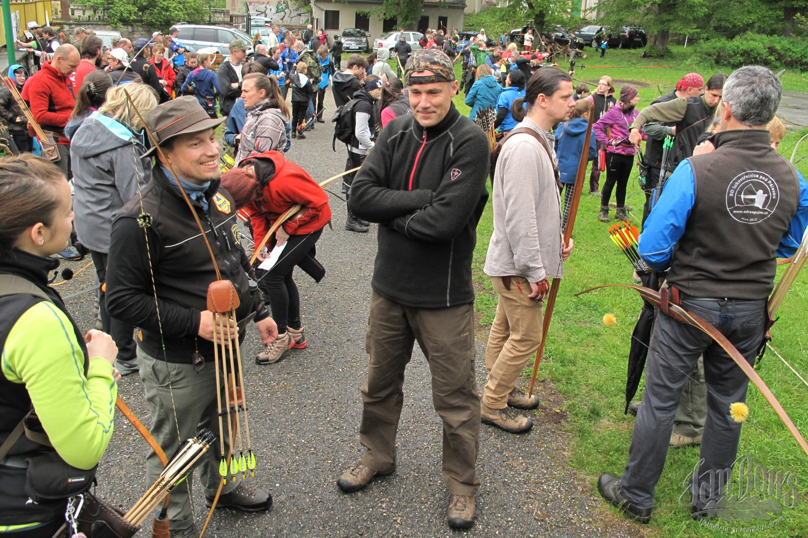

Benefits of Archery

There are several benefits to archery as a hobby. The first is focus. When training your archery skills, you are also training your ability to focus in and concentrate. Increasing your concentration can help in many areas of life, especially in high-pressure situations.
Balance is increased as you hold your body still while making a shot. More practice will condition you to stay steady as you prepare to fire.
Upper body strength is a great benefit. Drawing the bow string will help train the muscles on both arms, chest, shoulders and back. This stress is similar to lifting weights, as you generally pull the bowstring back and hold it as you concentrate.
Additional Benefits

Archery has you moving! In some competitions, archers can walk as much as 5 miles moving from different positions. Archers spend time walking to their target to collect their arrows and then walking back to their firing position. This walking can improve your cardiovascular health, muscle tone, and overall leg strength.
Archery is a means to finding people who share the same interest as you. Competitions and meet ups foster a large and fun community feeling.